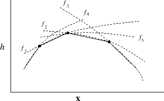
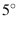

Next: Default mesh optimization in Up: Mesh Improvement Previous: Swapping Contents
GRUMMP uses the OptMS smoothing package from Argonne National Laboratory, which is based in large part on optimization-based smoothing techniques developed by Freitag, Jones, and Plassmann [2] and summarized in [3]. The central idea is to smooth a vertex location by seeking to optimize some local cell shape measure, such as minimum angle. This implies that each cell may contribute more than one quality value (for example, a tetrahedron has six dihedral angles). The objective function to be optimized is therefore a composite, piecewise-smooth function, as shown in Figure 5.4, with corners where the extremal quality values change. However, for most common cell quality measures, the composite objective function is convex. OptMS uses an analog of the steepest descent method, employing an active set of quality values -- those values that are currently the worst. Step size in the steepest descent iteration is determined by predicting where the next change in active quality values will take place. This approach can be shown to be equivalent to a generalized linear programming problem and therefore the optimum can be found in linear time.
|

|
As an important practical matter, optimization-based smoothing is
significantly more expensive per vertex than Laplacian smoothing.
Accordingly, GRUMMP takes advantage of the floating threshold capability
of OptMS. In this procedure, a Laplacian smoothing step is performed
for each vertex; the updated position is used only if local mesh quality
improves. If local mesh quality is not good enough, optimization is
invoked. “Good enough”, in this context, means that cells incident
on the vertex have a worst angle no more than 
Smoothing drivers are found in src/2D/MeshOpt2D.cxx and src/3D/MeshOpt3D.cxx. The OptMS library is in src/smoothing.